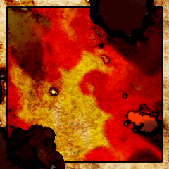
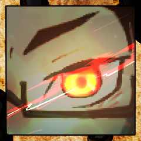
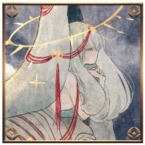
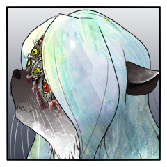
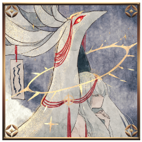
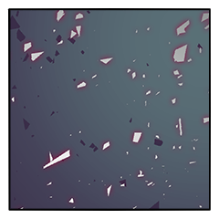
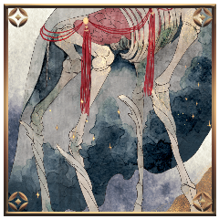
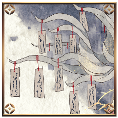

ラウンド２
[ 煤木野灰吏 ] がダイスシンボルを公開。出目は 3 です。
[ 葛火焔郎 ] がダイスシンボルを公開。出目は 5 です。
[ 藻久去鹿彌 ] がダイスシンボルを公開。出目は 2 です。
[ 御祀 潺 ] がダイスシンボルを公開。出目は 2 です。
GM
＊ラウンド2
プロット5：焔郎
プロット3：灰吏
プロット2：藻、潺
プロット５ 行動：葛火焔郎
葛火焔郎
2D6>=6 （判定：骨法術） (2D6>=6) ＞
4[2,2] ＞ 4 ＞ 失敗
GM
……ファンブル。自分のいるプロットの数値がそのままファンブル値となる。
焔郎はプロット5にいるため、出目で6以上を出す必要があった。
GM
焔郎は逆凪状態そのラウンドの間、あらゆる判定に自動失敗してしまう状態。になります。
煤木野灰吏
ぎりぎりと、鋼線が焔郎の身体を締め上げる。
GM
【神槍】に組み合わせた【陽炎】の判定での失敗ということで、
【神槍】を対象にした【禁術】による接近戦ダメージ１点を受けます。
[ 葛火焔郎 ] 謀術 : 1 → 0
葛火焔郎
骨までを絡め取り、削ぐ鋼線に断たせる肉が無い。

葛火焔郎
鋼線を伝い、熱が。僅かに灰吏に届くだろう。
プロット３ 行動：煤木野灰吏
煤木野灰吏
痛打汎用サポート忍法。コスト1。
判定に成功すると、直後の攻撃忍法のダメージを1点上昇できる。と魔琴を使用します。対象は焔郎。
煤木野灰吏
2D6>=5 （判定：拷問術） (2D6>=5) ＞ 8[2,6]
＞ 8 ＞ 成功
煤木野灰吏
2D6>=5 （判定：遊芸） (2D6>=5) ＞ 9[4,5]
＞ 9 ＞ 成功
煤木野灰吏
揺らし比良坂機関の装備忍法。
【秘密】を持っている相手への攻撃のダメージが1点上昇する。が乗ります。
GM
はい。焔郎に３点の射撃戦ダメージが入ります。

葛火焔郎
■奥義
《天焔・火産霊之鳥（あめのほむら・ほむすひのとり）》
指定特技 ：意気
エフェクト：
目覚め奥義開発の【強み】のひとつ。目覚めを付加した不死身で1点でも生命力を回復すると、その後の攻撃に接近戦ダメージ1点が上乗せされる。
初手で1D6->1を振ると泣くのでマジで胃に悪いやつ。
/
不死身奥義の一種。いつでも使用可能。
自分にかかっている変調全てと、1D6-(奥義を使用した回数)点の生命力を回復する。
初手で既に-1入ることに注意。
/
回数制限これも２回までしか使えない。
葛火焔郎
――君が行く道の長手を繰り畳ね焼き滅ぼさむ天の火もがも
葛火焔郎
「あ”あ”あ”あ”あ”あ”！！！！！！！！」
葛火焔郎
1D6-1 (1D6-1)
＞ 6[6]-1 ＞ 5
葛火焔郎
「こんなっ、ところで、負けられねえんだよ！！！！！！」
[ 葛火焔郎 ] 忍術 : 0 → 1
[ 葛火焔郎 ] 謀術 : 0 → 1
[ 葛火焔郎 ] 妖術 : 0 → 1
GM
葛火焔郎の攻撃忍法のダメージに、接近戦ダメージ１点が上乗せされます。
GM
焔郎に潰れている分野を１つ選択していただく形になりますね。
[ 葛火焔郎 ] 忍術 : 1 → 0

藻久去鹿彌
立ち昇る煙と焔が空で混ざり合う。
煤木野灰吏
骨を折り、肉を断つべく迫った、その尽くが溶かされる。
GM
藻、潺は2D6を。出目の低い方から処理します。

御祀 潺
2d6 (2D6) ＞
9[4,5] ＞ 9

藻久去鹿彌
2d6 (2D6) ＞
9[3,6] ＞ 9
御祀 潺
2ｄ6 (2D6) ＞
5[1,4] ＞ 5
藻久去鹿彌
2d6 (2D6) ＞
6[1,5] ＞ 6
プロット２ 行動：御祀潺
御祀 潺
凶手汎用サポート忍法。コスト1。
その後の命中判定のスペシャル値が2減少する。を
御祀 潺
闇斑汎用攻撃忍法。間合2、コスト1以上任意の集団戦ダメージ1点。
この攻撃忍法はコストを任意に決定でき、その数と同じだけ回避判定に-修正をつけられる。を煤木野灰吏に。使用コストは1.
御祀 潺
2D6+1-1>=5 （判定：用兵術） (2D6+1-1>=5) ＞
5[1,4]+1-1 ＞ 5 ＞ 成功
GM
灰吏さんは-1をつけて用兵術から回避判定を。
煤木野灰吏
誰か修正つけてくれませんか～？？？？？？？
煤木野灰吏
この場には俺に＋感情を持っている人が3人いますね？
煤木野灰吏
坊っちゃんは俺の応援なくても勝つから…………
煤木野灰吏
2D6-1>=7 （判定：遊芸） (2D6-1>=7) ＞
9[4,5]-1 ＞ 8 ＞ 成功

煤木野灰吏
霧の向こうから、視線を感じる。
御祀 潺
あの日、頭を撫でた。その感触がよみがえる。
プロット２ 行動：藻
藻久去鹿彌
血旋渦隠忍の血統の攻撃忍法。間合3、コスト1、接近戦ダメージ1点。
追加効果などはないがシンプルに間合が長くて強い接近戦攻撃。を使用します。
対象は煤木野灰吏
藻久去鹿彌
2D6>=5 （判定：異形化） (2D6>=5) ＞ 6[1,5]
＞ 6 ＞ 成功
GM
【霊装】功績点3点を消費して追加できる特殊忍具。
取得時に妖術分野から特技を一つ指定する。自分の攻撃忍法の回避への指定特技をその特技に変更できる。の効果が使用できますが。
GM
異形化と呪術。どちらでの回避を指定しますか？
煤木野灰吏
2D6>=9 （判定：流言の術） (2D6>=9) ＞
6[2,4] ＞ 6 ＞ 失敗
GM
２点ダメージ血旋渦1点、【獣化】による追加ダメージ1点の合計2点。ですね。
藻久去鹿彌
2d6 (2D6) ＞
7[2,5] ＞ 7
[ 煤木野灰吏 ] 体術 : 1 → 0
[ 煤木野灰吏 ] 戦術 : 1 → 0
藻久去鹿彌
踏み入るならば。
神の清濁を受け入れてもらうほか。
煤木野灰吏
神域に踏み入り、穢をまきちらす人の子。

藻久去鹿彌
神気をたたえ過ぎた神の血が。
人の皮膚を焦がす。
藻久去鹿彌
神が舞うと血が振り撒かれる。
土地が清められる、血。
藻久去鹿彌
神の動脈から流れ出るその血は。
今は、少女の涙にも似ている。
GM
ラウンド終末の忍法も、脱落もおそらくないでしょう。
ラウンド3
GM
ダイス目を隠し、プロットを変更し、決定したら秘話にてGMに伝えてください。
[ 御祀 潺 ] がダイスシンボルを公開。出目は 5 です。
[ 煤木野灰吏 ] がダイスシンボルを公開。出目は 3 です。
[ 藻久去鹿彌 ] がダイスシンボルを公開。出目は 2 です。
[ 葛火焔郎 ] がダイスシンボルを公開。出目は 4 です。
GM
＊ラウンド３
プロット５：御祀潺
プロット４：葛火焔郎
プロット３：煤木野灰吏
プロット２：藻
プロット５ 行動：御祀潺
御祀 潺
2D6>=6 （判定：用兵術） (2D6>=6) ＞
5[2,3] ＞ 5 ＞ 失敗
煤木野灰吏
今はまだ、ここを離れるわけにはいかない。
プロット４ 行動：葛火焔郎
葛火焔郎
2D6>=6 （判定：骨法術） (2D6>=6) ＞ 9[3,6]
＞ 9 ＞ 成功
GM
成功ですね。【神槍】には【鬼影】により-2の修正が。
葛火焔郎
2D6-2+1>=5 （判定：手裏剣術） (2D6-2+1>=5) ＞
4[1,3]-2+1 ＞ 3 ＞ 失敗
[ 葛火焔郎 ] 器術 : 1 → 0
葛火焔郎
炎はなおも身体を焼く。絡みつく鋼線は熱され、更に動きを阻む。
葛火焔郎
それでも、手を伸ばさなければ。届かせなければ。
葛火焔郎
焦りが身を灼く。それを表すように肌が焦げ、肉を露わにし。
御祀 潺
儀式が始まれば、この眼は新たな神へと完全に受け継がれる。
プロット３ 行動：煤木野灰吏
煤木野灰吏
■奥義
《灰撒》
指定特技 ：拷問術
エフェクト：クリティカルヒット
効果・演出：巻き上がる灰が刃となり、身体を切り刻む。
煤木野灰吏
焔郎に絡みつく鋼線が熱され、とろけて、形を変える。
葛火焔郎
愚直に積み重ねてきた鍛錬によって練り上げられた身体を切り刻む、灰。
葛火焔郎
焔郎の命を燃やして、あなたが願う命を燃やして。
葛火焔郎
にいちゃんが僕に死んでほしくないことは、もう充分、わかった。
葛火焔郎
思えばいつから灰吏と手合わせしなくなっただろう？
葛火焔郎
いつから、いつでも後ろにいてくれることを信じて、安心していただろう？
葛火焔郎
昔はちょっと姿が見えなくなっただけで、泣いたのに。
煤木野灰吏
灼けた空気と共に、身体を内側から焦がす。
葛火焔郎
クリティカルヒット適用前に兵糧丸を使用します。
GM
了解しました。回復分野はいかがいたしますか？
[ 葛火焔郎 ] 器術 : 0 → 1
煤木野灰吏
4d6 (4D6) ＞
13[1,3,3,6] ＞ 13
[ 葛火焔郎 ] 器術 : 1 → 0
[ 葛火焔郎 ] 謀術 : 1 → 0
[ 葛火焔郎 ] 戦術 : 1 → 0
[ 葛火焔郎 ] 妖術 : 1 → 0
プロット２ 行動：藻
藻久去鹿彌
血旋渦を使用します。
対象は煤木野灰吏。

藻久去鹿彌
2D6>=5 （判定：異形化） (2D6>=5) ＞ 7[3,4]
＞ 7 ＞ 成功
煤木野灰吏
2D6>=9 （判定：流言の術） (2D6>=9) ＞ 9[4,5]
＞ 9 ＞ 成功
藻久去鹿彌
地を清めるために、なおも血を振りまく。
煤木野灰吏
おまえが完全に神様になってからなら、いくらでも